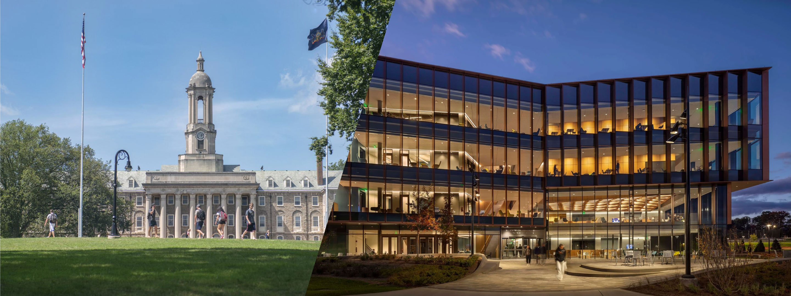

Fully Funded PhD Opening
My research group is recruiting highly motivated PhD students to join us at Penn State's University Park campus, located in the State College area of central Pennsylvania. The position is expected to be fully funded and will provide a competitive graduate assistantship package.
This opportunity is intended for students interested in rigorous, high-impact research at the intersection of structural engineering, advanced materials, automated construction, experimental testing, numerical modeling, and AI-assisted simulation. I will not use this page to repeat general information about Penn State, University Park, or State College; interested students can easily find that information. The purpose of this page is to explain the specific research fit, expectations, and application process for my group.
What We Can Offer
-
Fully Funded PhD Study
A fully funded PhD position with a competitive graduate assistantship package at Penn State's University Park campus.
-
High-impact Research
Research connecting mechanics, materials, fabrication, computation, and large-scale structural validation.
-
Research Opportunities
Opportunities to participate in multidisciplinary, multi-institutional, and federally funded research projects.
Students in the group will have the opportunity to work on research problems that connect fundamental mechanics, materials, fabrication, and large-scale structural validation. The group will emphasize pioneering work rather than repetitive studies that only aim to generate incremental publications.
Depending on project fit and funding availability, students may be involved in multidisciplinary, multi-institutional, and federally funded research projects. Research activities may include advanced material systems, automated construction and fabrication, structural testing of components and systems, computational mechanics, AI-assisted modeling, and infrastructure performance under demanding service or extreme environments.
The position is best suited for students who want to build deep research capability, develop strong technical independence, and contribute to work that can make a real impact in structural engineering, infrastructure, construction, and related fields.
Research Fit and Technical Background
I am especially interested in students with strong preparation in one or both of the following areas.
Experimental, Fabrication, and Hands-on Research
This direction is related to experimental work in automated construction, advanced materials, and infrastructure-scale structural testing. Relevant experience may include building or modifying fabrication systems, developing or testing new material systems, designing experimental setups, instrumentation, data acquisition, and conducting tests on structural components for buildings, bridges, aerospace structures, or other infrastructure systems.
Computational Modeling, Programming, and AI-assisted Simulation
This direction is related to programming, numerical simulation, computational mechanics, and AI-assisted modeling of materials, microstructures, construction processes, structural behavior, and long-term service performance. Students interested in this direction should have strong programming ability, strong modeling/simulation skills, and the ability to learn new computational tools quickly.
General Expectations
All PhD students are expected to develop strong skills in research data analysis, technical communication, academic writing, and presentation of research outcomes. These are not optional skills. They are fundamental parts of PhD training and long-term research success.
A PhD is a demanding, multi-year commitment. Students are expected to learn quickly, work independently, formulate and test hypotheses rigorously, and persist through uncertainty. This path is a major investment from the student’s perspective, and it is most suitable for candidates who are genuinely determined to pursue advanced research.
This position is not ideal for students who only want to build metrics or collect credentials. It is intended for students who want to develop real expertise and contribute to challenging research problems.
Application and Screening Process
For this group opening, applicants should first complete the group screening process. The official Penn State Graduate School application requirements are provided below as a reference, so applicants can self-check whether they meet the general graduate admission requirements.
For Fall 2026 admission, because the regular application deadline has passed, interested students should first submit materials through the group screening form. After a candidate passes this screening step, I will coordinate with the graduate program regarding the formal application process.
For the group screening, please submit the following materials through the "Apply" button below:
- Complete all questions in the form.
- Upload a PDF-only CV file named LastName_FirstName_CV.pdf.
- Upload a PDF-only Statement of Research Interests file named LastName_FirstName_SRI.pdf.
The CV should summarize your education, research experience, technical skills, publications if any, awards, and other relevant qualifications.
The Statement of Research Interests is especially important. This is where you should clearly and concisely present your research interests, relevant experience, technical strengths, and credentials. In no more than two pages, please explain what research direction you want to pursue, what skills and experience make you well prepared for this direction, and why this group is a strong fit for you.